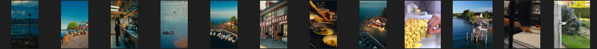
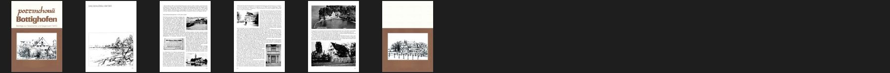
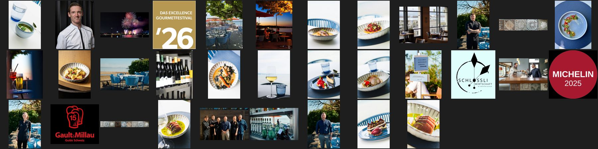

59 Bilder, 0 Videos, 7 PDFs. Stand 19.10.2026.
Instagram, ohne Anmeldung sichtbare Beiträge
Rechte: Kunde

Logo des Hauses in der grössten gefundenen Fassung (Fundort in herkunft.json)
Rechte: Kunde
Schweiz Tourismus, Bilder des Eintrags (Originaldateien unter rawmedia/, sonst die grösste Fassung)
Rechte: vom Kunden geliefert
Tourismus- und Reiseportale (Dateiname beginnt mit dem Portal)
Rechte: je Portal, meist vom Kunden geliefert
Tourismus- und Reiseportale (Dateiname beginnt mit dem Portal)
Rechte: je Portal, meist vom Kunden geliefert
Seiten aus einer Orts- oder Hausgeschichte als Bild (Titel und Seite in herkunft.json)
Rechte: Herausgeber des Hefts. Nur zur Anschauung

Website des Kunden
Rechte: Kunde. Impressum auf Bildrechte prüfen

Bilder auf der Seite des Kunden, die ein anderes Haus zeigen, etwa das Schwesterhaus (steht in herkunft.json)
Rechte: Rechte beim anderen Haus. Nicht für diese Seite
Bottighofen_Heft_2_Muehlen_und_Schloessli_1994 · 20261014_Weinkarte · 4_Hands-_Stier · Bankettmenuvorschlage · Lastermeile-Homepage-2339 · Lunch_261019 · Speisekarte-Oktober